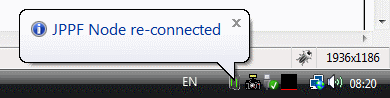
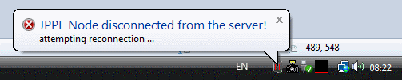

Node Tray sample |
What does the sample do?
This sample provides a node health monitor that sits in the system tray.It displays the following information:
- A "computer" icon in the system tray, which turns green when the node is connected to a server, and red when it is disconnected
- System tray notifications when the node status changes
- Information about the node's performance and connection to a JPPF server, when the mouse is hovering over the icon
Here are some screenshots:
|  |  |
|  | |
How do I run it?
Before running this sample application, you need to install a JPPF server and at least one node.For information on how to set up a node and server, please refer to the JPPF documentation.
Once you have installed a server and node, perform the following steps:
- open a command prompt in JPPF-x.y-samples-pack/NodeTray
- important: to build this sample you need a JDK 1.6 or later, as the system tray APIs are not available in prior Java versions
- build the sample: type "ant jar" or simply "ant"; this will create a file named NodeTray.jar
- copy NodeTray.jar in the "lib" folder of the JPPF node installation, to add it to the node's classpath. This is enough to deploy the add-on.
- start the server and node
- you should see the new system tray icon
What features of JPPF are demonstrated?
I have additional questions and comments, where can I go?
If you need more insight into the code of this demo, you can consult the Java source files located in the CustomMBeans/src folder.
In addition, There are 2 privileged places you can go to:
- The JPPF Forums
- The JPPF documentation
| Copyright © 2005-2013 JPPF.org |
|
|